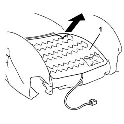
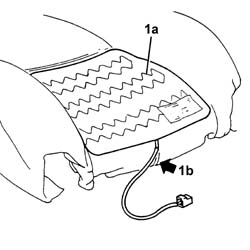

7045M26 L/H OR R/H FRONT SEAT SQUAB HEAT PAD - R+R FOLLOWING ELECTRICAL WIRING CHECK
- Path
- Procedures > 70 FITTINGS > 7045 FRONT SEATS > 7045M FRONT SEAT HANDLING > 7045M26 L/H OR R/H FRONT SEAT SQUAB HEAT PAD - R+R FOLLOWING ELECTRICAL WIRING CHECK
- Kind
- repair procedure (removal / refitting; the operation number is the code)
- Applies to
- all engines; all production periods
- Interactive page
- https://sloeber94.github.io/elrnDB-aGt/en/#/125001933
Applies to: all engines; all production periods
 Removing
Removing
 Refitting
RefittingOp. 7045A10 L/H OR R/H FRONT SEAT (ONE) - R+R
Op. 7045A25 SQUAB LUMBAR KNOB - R R
Op. 7045A84 R R HANDLE FOR FRONT SEAT FORE AND AFT ADJUSTMENT
1. Remove the heater pad, detaching it from the squab padding.

Applies to: all engines; all production periods
Refitting
RemovingCheck that the heat pad is not damaged.
1. Place the heater pad (1a) in its original position and attach the adhesive side to the padding.

Applies to: all engines; all production periods
Op. 7045A84 R R HANDLE FOR FRONT SEAT FORE AND AFT ADJUSTMENT
Topics linked from this page (3)
- 7045A10 L/H OR R/H FRONT SEAT (ONE) - R+R
- 7045A25 SQUAB LUMBAR KNOB - R R
- 7045A84 R R HANDLE FOR FRONT SEAT FORE AND AFT ADJUSTMENT